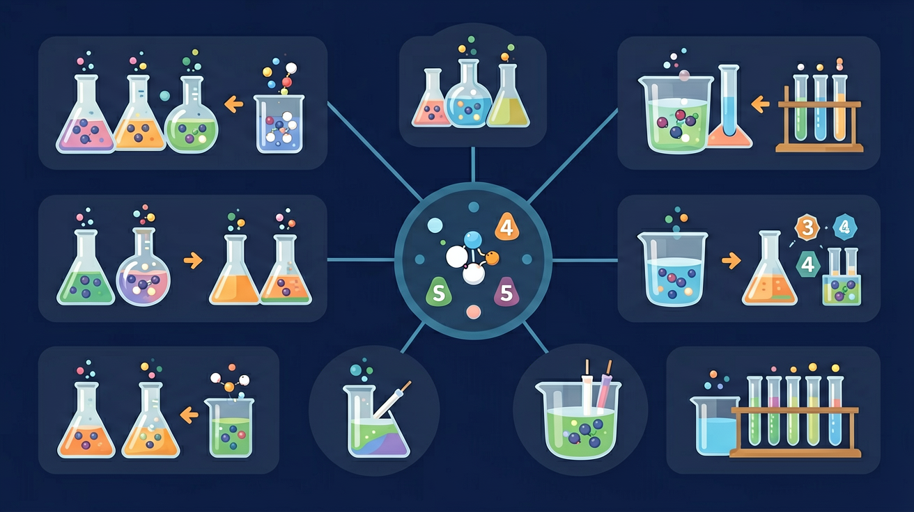

Gallery
v1.1.0 · skill v7.14.0
在化学实验室中，小张需要配制0.1mol/L的氯化钠溶液100mL。他发现实验室的电子天平最小称量单位为0.001g，而单个NaCl分子的质量极小，无法直接称量。
学生知道物质由分子或原子组成，了解质量的概念
如何在微观粒子数与宏观质量之间建立联系
运用物质的量概念，计算所需NaCl的质量
物质的量 n 的单位是摩尔 mol，1 mol 任何指定粒子都含阿伏伽德罗常数 Nₐ≈6.02×10²³ 个粒子。必须写清粒子种类：1 mol O 表示氧原子，1 mol O₂ 表示氧分子，两者包含的氧原子数不同。粒子数换算遵循 N=nNₐ。
1 mol CO₂ 中氧原子的物质的量是多少？
为什么化学计算不直接数分子，而要引入“1 mol”这个桥梁？
先选一个你关心的问题。后面的例子、提示和 AI 学伴都会围绕这个问题来帮你推进。
选择或输入后，本课会围绕你的问题展开。
理解物质的量作为连接微观粒子与宏观可测量物理量的桥梁作用，掌握物质的量、摩尔质量、气体摩尔体积之间的换算关系。
通过测定0.5mol铁粉的质量为28g，验证1molFe的摩尔质量为56g·mol⁻¹，证明微观粒子数与宏观质量的可换算性。
先确定已知量与待求量关系，选择对应公式（n=m/M或n=N/Nₐ），注意单位统一，代入阿伏加德罗常数6.02×10²³进行计算。
计算气体体积时未注意标准状况条件（0℃、101kPa），误将常温常压数据代入22.4L·mol⁻¹公式导致错误。
课堂任务：请用“现象/文本/地图/实验数据 → 关键证据 → 学科解释 → 迁移应用”四步，重写一个关于「物质的量：把微观粒子数变成可称量的宏观量」的新问题。
如果你能解释“为什么化学计算不直接数分子，而要引入“1 mol”这个桥梁？”，这节课就真正过关了。
摩尔质量 M 的单位是 g·mol⁻¹，数值上等于该物质的相对分子质量或相对原子质量。质量与物质的量关系为 n=m/M。计算前先写单位并检查数量级：克除以克每摩尔得到摩尔；不能把摩尔质量写成没有单位的相对分子质量。
11 g CO₂（M=44 g·mol⁻¹）的物质的量是？
固体、液体的摩尔体积取决于物质种类，不能直接套 22.4 L·mol⁻¹。只有在标准状况下的理想气体，才常用 Vₘ≈22.4 L·mol⁻¹，并满足 n=V/Vₘ。溶液则用物质的量浓度 c=n/V，体积必须以升计；稀释前后溶质物质的量不变。
100 mL 1.0 mol/L NaCl 溶液含 NaCl 多少 mol？
物质的量 n 是国际单位制基本物理量，单位是摩尔（mol）。1 mol 任何微粒含有阿伏加德罗常数个微粒，约 6.02×10²³。常用关系：n=N/Nₐ，n=m/M，对气体在标准状况下 n=Vₘ/22.4 L·mol⁻¹。它把看不见的粒子数变成可称量、可量取的宏观量。
计算时先明确对象是分子、原子还是离子，再选 n=m/M 或 n=N/Nₐ 或气体体积公式。单位要一致：质量用克时 M 用 g·mol⁻¹。混合物题先写关系式再列方程。
常见误区：常见误区是把物质的量当成质量或把 Nₐ 当成单位。摩尔是单位，Nₐ 是常数；算原子数要看每个分子含几个原子。
1 mol O₂ 中含有的氧原子物质的量是？
本课任务：改变溶质物质的量和溶液体积，记录浓度；找出两种不同操作却得到相同浓度的方案。
写清自变量、因变量和至少两个保持不变的条件，避免同时改变多个因素后无法归因。
至少记录三组带单位的数据或三个可复查的现象，不用“变大了”“更明显”代替证据。
用本课公式、粒子模型或受力关系解释趋势，并指出结论成立所依赖的模型条件。
换一个参数或真实情境预测结果，再用仿真检验；若不一致，回查变量、单位和边界条件。

识别并写出本节核心定义、公式或分类标准。
把本课标准用于一个实验数据或真实生活场景。
设计一个反例，说明常见错误为什么站不住脚。
记忆锚点：三角关系：m、n、M 中间放 n，m = nM；N、n、Nₐ 中间也放 n，N = nNₐ。
易错提醒：常见错误：说“1 mol 氢”不指明粒子种类。1 mol H、1 mol H₂、1 mol H⁺代表的粒子不同。
不要只看结论。动手改变变量后，再用一句话解释画面为什么变了。